Screens and dialogs
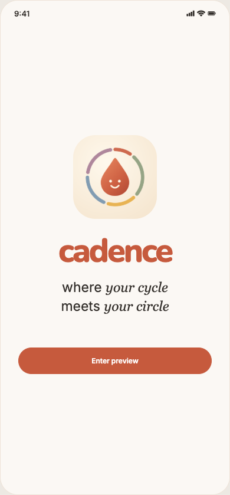
Opening pageOpen preview or Controls → Opening page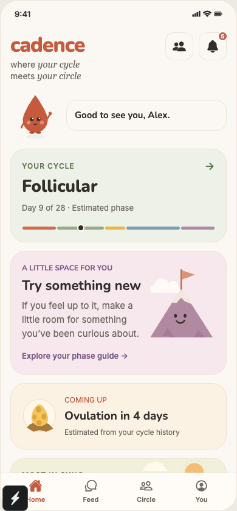
HomeOpening page → Enter preview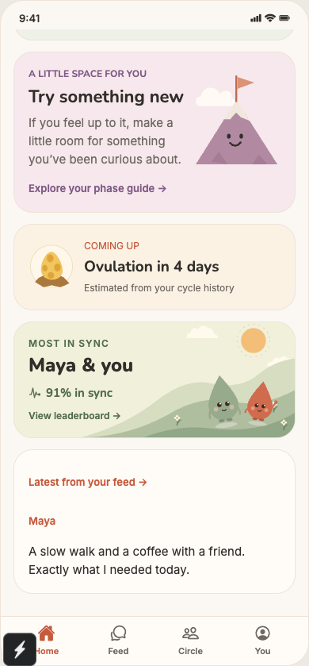
Home · 2Opening page → Enter preview · scroll down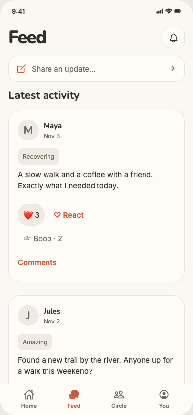
FeedBottom navigation → Feed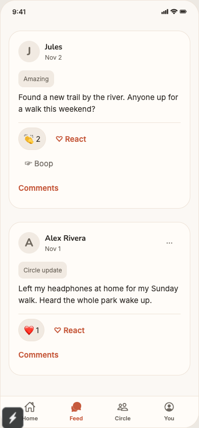
Feed · 2Bottom navigation → Feed · scroll down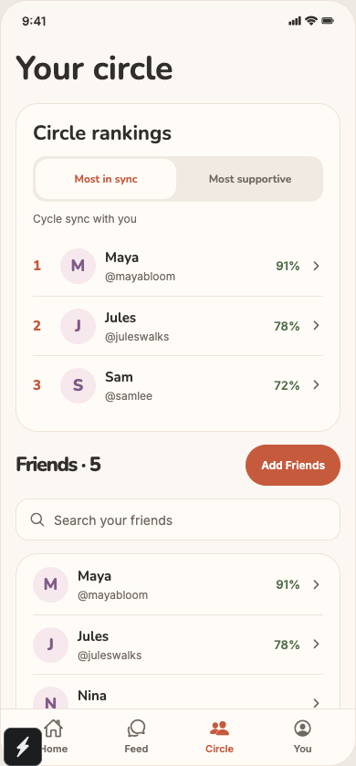
CircleBottom navigation → Circle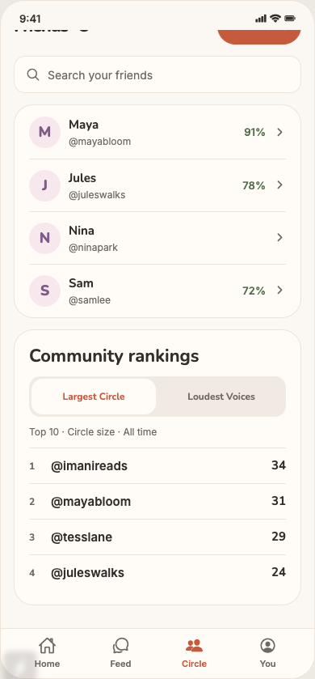
Circle · 2Bottom navigation → Circle · scroll down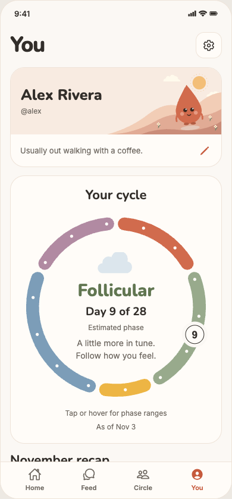
YouBottom navigation → You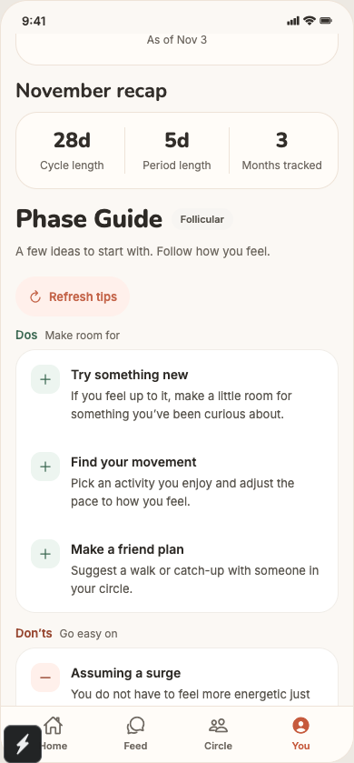
You · 2Bottom navigation → You · scroll down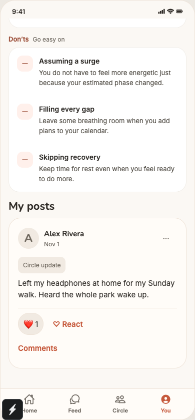
You · 3Bottom navigation → You · scroll down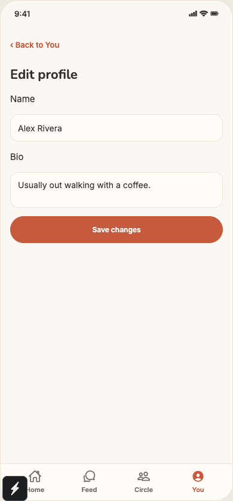
Edit profileYou → Edit profile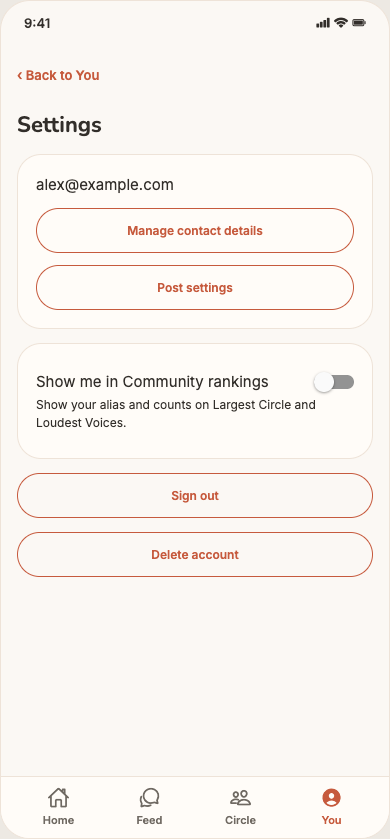
SettingsYou → Settings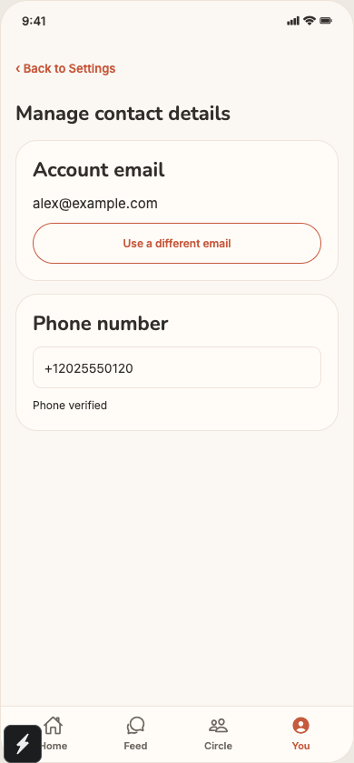
Manage contact detailsSettings → Manage contact details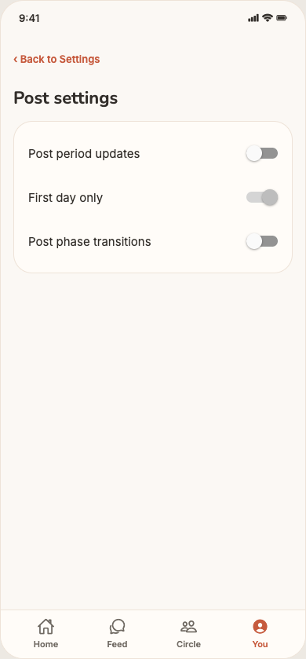
Post settingsSettings → Post settings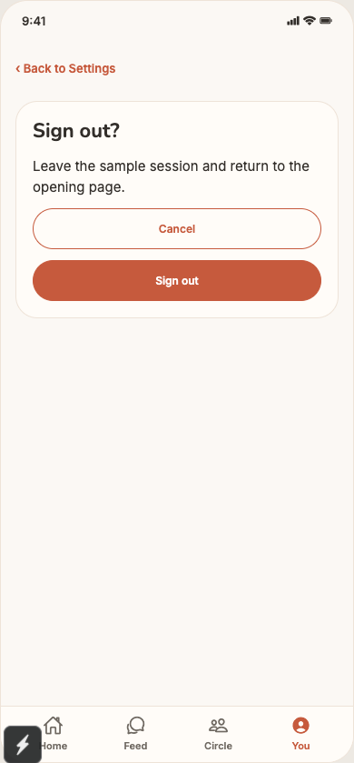
Sign-out confirmationSettings → Sign out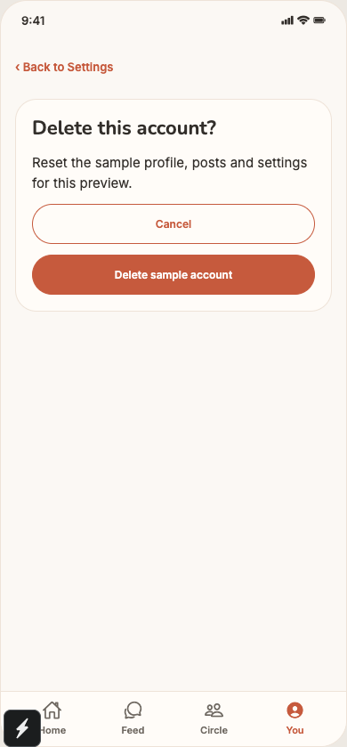
Delete-account confirmationSettings → Delete account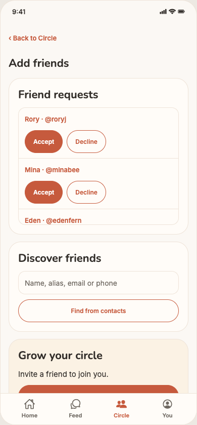
Add friendsCircle → Add Friends Add friends · 2Circle → Add Friends · scroll down
Add friends · 2Circle → Add Friends · scroll down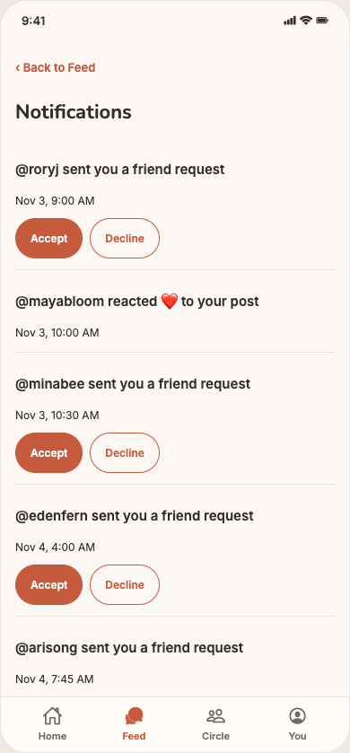
NotificationsFeed or Home → Notifications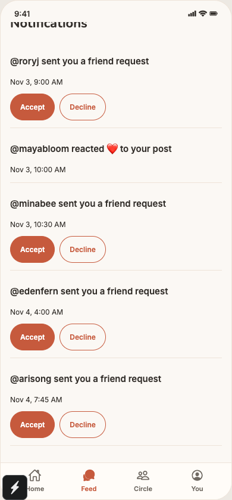
Notifications · 2Feed or Home → Notifications · scroll down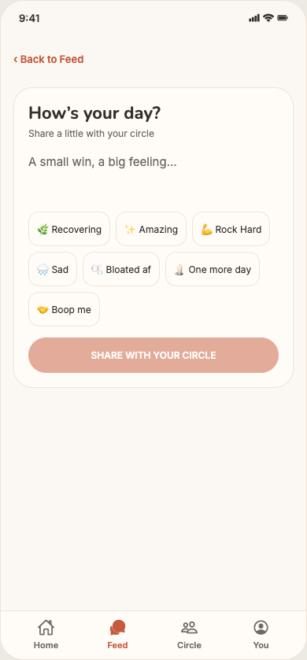
Write a postFeed → Share an update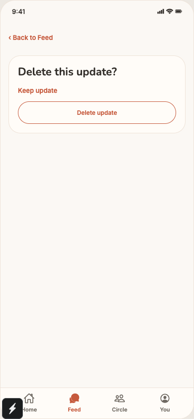
Delete post confirmationFeed or My posts → post menu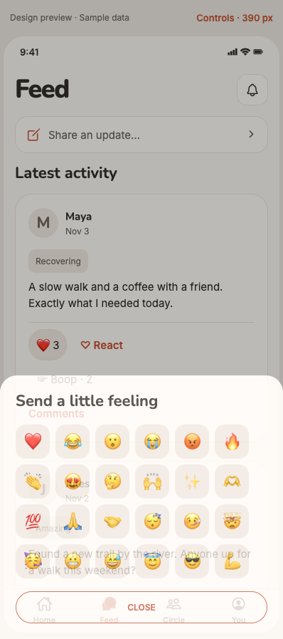
Reaction pickerPost → Choose a reaction Cycle day ranges
Cycle day ranges You · Offline
You · Offline